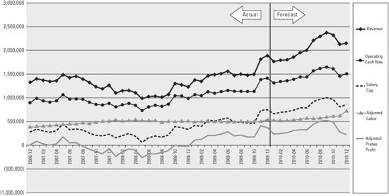
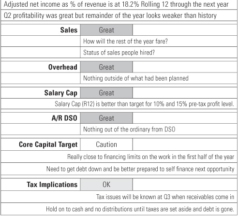

A budget is a license to spend; a forecast is your road map to profitability.
I had a partner who once observed that we always make a profit on the forecast. The problem was we did not follow through on what we said we’d do, which would have led to a real profit when the year was over. We had to learn (just like all of our clients) that the walk is more important than the talk.
To make forecasts work, they have to go hand in hand with execution. In frustration, entrepreneurs resort to budgets when their forecasts do not come true. When I speak to entrepreneurs, the most common thing I hear is: “I need a budget.” My response is always, “No, you don’t. You need a business model and a forecast you are willing to act on.”
Budgets are, essentially, a license to spend. They’re not a roadmap to making money. They’re not flexible when it comes to changing business conditions. I can have a budget for rent because that doesn’t change. But I can’t have a budget for office supplies because I should buy office supplies only when it’s absolutely necessary in order to run the business. If you budget that number, you’ll have to make someone the office supplies police. Someone would have to make sure you buy pens that are 20 percent cheaper. Likewise, you can’t cut your kitchen supplies enough to turn yourself into a profitable business. I had a partner who, whenever things got tight, started counting how many soft drinks one of our staff members was consuming. That’s just not sending the right message about your culture. No, you don’t want to be wasteful. If I see anyone truly taking advantage of the kitchen supplies, that’s really just a teachable moment for me to counsel that person or suggest a career change.
Budgeting is one of those things that can make you keep your head down when you actually need to keep your head up to see what’s coming at you. Instead, spend 25 percent of your effort looking at what has happened and 75 percent of your effort looking at numbers and thinking about what you want to make happen.
I began thinking differently about this when I had a two-day tour at Springfield ReManufacturing, a Jack Stack company that I mentioned in an earlier chapter. I was blown away by the people in that company. Machine operators, clerks, shippers—people who had never taken an accounting class in college—could explain a balance sheet, a P&L, and a cash flow statement better than any accountant I’d ever met in my life. Not only that, they updated their current month and remainder-of-the-year forecasts each week! At that point, it dawned on me that I was making this too hard.
Springfield ReManufacturing had a simple process. They would draw up a plan for the entire year, but more importantly, they would forecast for the entire year. The plan was drawn up once, but the forecasts were updated each month as actual results became known and better information was available to forecast expectations for the remainder of the year. When they began the month of April, they would know the actual numbers from January through March. Then they would make a weekly projection of what they thought was going to happen in April. Then they projected data on a month-to-month basis so they had a forecast for the rest of the year. They knew, based on three months of actual data and nine months of forecasts, where they thought they were going to be by the end of the year.
It’s easier to keep up with this than it seems. I draw up a plan at the beginning of the year that says what I expect that year. Here’s the revenue. Here’s the cost. Here’s my expected pretax profit. Here’s how I’m going to use the cash. When the annual plan is done, it goes in a drawer, and I may look back at it only once a quarter—or maybe not at all. The more relevant question is this: What have I actually done to this point, and what do I think is going to happen over the rest of the year? You start to realize you don’t have to keep reinventing the wheel and wondering what’s going to happen next. You’re much more in the flow of things because you’re constantly looking at what has happened and what’s going to happen. You start to get a sense of the momentum of your business and where it’s going to take you.
You’re going to understand that there are certain things you can’t change right away. It’s much like the Exxon Valdez. They knew several hours in advance that they were going to run ashore in Alaska and create an oil spill. But a large and heavy barge can’t turn on a dime. Most businesses are very similar. You’ll learn what your turn rate is, and you’ll learn the answers to these questions: How long does it take for you to make a decision? Can you trim labor based on hourly metrics like the Outbacks and Starbucks of the world, or do you rely on weekly or monthly metrics? You’ll refine the answers until you get it down to the smallest possible time increment.
That may sound like a lot of work, but you don’t have to fill in every detail on the P&L or the balance sheet. Keep it simple, and answer questions such as “What’s my revenue? What’s my cost of goods sold? What’s my labor? What are my operating expenses?” When you get the data at those high levels, you’ll see that the numbers don’t move around as much as you thought they would. You’ll understand that the economic engine of your business is pretax profit.
In a previous chapter, I talked about cash being the critical number for Jack Stack’s first year in business. He wanted to know what the cash balance was so he’d never run out. Once you’re fully capitalized, cash isn’t usually your critical number. After the first year, you think more along the lines of how profitable you can be and if you can set a record. This is when you start to look at your business metrics. Don’t look at the metrics of other companies; set your own metrics and break your own records. Keep stretching until you find the edges to improve your performance.
At this point I want to give you a word of caution. There are a lot of people who sell very expensive, very detail-oriented cash-flow projection systems that allow you to create massive spreadsheets. Don’t buy or create a system that requires far more effort to update than the value you get from of it. If you spend all of your effort updating the system, you’ll spend very little time analyzing the data. If a complex model is not talking to you, don’t pay for it. Sometimes I use a complex model for a client when I need to explain things clearly, but if the client doesn’t get any benefit from it, I stop using it.
You already know you have to keep forecasting simple, so first let’s try to understand one month. If you can understand how the data from a profit-and-loss statement for one month turns into cash, then you can start expanding it into multiple months.
Take a look at the simple cash-flow model in exhibit 10.1 (a copy of the model is available at www.seeingbeyondnumbers.com).
In exhibit 10.1, the first two columns represent two months of actual data. The next three columns represent forecast data. In the forecast columns, the shaded areas represent the fields you have to input to drive the model calculations.
You can see the basic elements I’ve talked about: revenue, cost of goods sold (in this example, there’s no labor component in cost of goods sold), and operating expenses. The five most common operating expenses are salaries, marketing, facilities, payroll taxes and benefits, and other operating expenses. The result of all that activity is your net operating income.
In addition to these amounts, you want to see two critical percentages: gross profit and net operating income (pretax profit) as a percentage of revenue. You can lower your gross profit and potentially improve your pretax profit by making changes, such as sales volume or employee salaries, but pretax profit as a percentage of revenue is the most important number.
In Month 1, there’s $8,000 of net operating income, but that isn’t cash. There are some essential elements that will lead you to the cash number. The first thing you look at is accounts receivable (A/R). If you get paid immediately upon performance or sale or whatever you do, then A/R is irrelevant, but the vast majority of businesses have A/R.
In exhibit 10.1, you have a beginning accounts receivable balance of $95,000 coming into the year. It ends with a $110,000 balance, which means your receivables went up. Subtract the beginning balance from the ending balance to get the net change, or the cash impact, which is $15,000. It’s one of those times where growth actually used cash. You need to understand that when it comes to cash flow, a rise in accounts receivable uses cash.
Now let’s look at payables. The beginning balance is $20,000, and the ending balance is $15,000, so your payables went down. That means you had to use cash to lower your payables, so that results in a net change of $5,000 of cash used.
Another major component of the forecast is debt. You started the month with a debt of $50,000 and ended the month with a debt of $65,000, so you created $15,000 of cash through debt sources.
Everybody forgets to look at shareholder’s equity. There are two things that can happen there. You can either put money in (add it) or you can take money out (subtract it). In exhibit 10.1, you took out $5,000 as a distribution, so the total net change in cash is minus $2,000.
Sometimes there are two other elements, but they’re not shown in exhibit 10.1. If you had inventory or fixed asset purchases and sales, you’d handle that the same way as shown in the A/R example.
The next item in the exhibit is the total net change in cash. When you look at the cash flow forecast for the next month, you can see that
the beginning number for each of the cash flow adjustment items is the same as the previous month’s ending number, so all you have to do to forecast the next month’s total net change in cash is to estimate what will happen in that month.
For instance, if you know that A/R is too high, you have a target to shoot for. You can’t just hope that A/R goes down. Hope is not a strategy. You have to start making tougher negotiations and maybe stop being too nice a lot of the time. Try this technique: Every time you’re in a business relationship and think you’re being extra nice, look at a picture of your spouse and your children sitting at a table with no food on it. Then decide how nice you really want to be. It’s business, and while it’s important to be nice, it’s important to develop solid relationships with people who pay their bills.
Now you have all the elements you need for your forecast, so you can continue to build it across your spreadsheet for all of the months. You can forecast by quarter, per six months, or possibly even per year. As time goes by and you have actual numbers, you can go back and drop in the real data. Then you do what Springfield ReManufacturing does, and you reforecast the future. This task will take less than an hour each month, and when you become really adept at it, it may take only fifteen minutes.
You can drive your gross profit calculation by forecasting your sales and your gross profit percentage. The model calculates cost of goods sold and gross profit dollars by inputting the target gross profit percentage. All of your operating expense categories are easy to predict. History will tell you what the future is going to be unless you decide to add or eliminate a cost. Labor should be the easiest to predict since it is a function of your staff structure.
Predicting the cash flow section is where most people go wrong. Your A/R is driven by your manual input of days sales outstanding (DSO), which I’ll explain in a moment. You can easily input your payables based on your past history with your vendors. Debt is an input cell based on either available cash or fixed payment requirements. Capital injections and distributions are input cells, too. I hope I have convinced you that you should take only tax distributions until you hit your core capital target. You can see in Month 5 that the distribution amount is 40 percent of the three previous months’ pretax profit.
You can structure this forecast so the data easily comes straight out of your accounting system. If you think it’s difficult, you should visit Springfield ReManufacturing and be humbled by factory workers who will run circles around you when it comes to understanding this data.
Now that your forecast is complete, you can create those metrics we talked about earlier. It’s important to understand that a metric is more about movement than it is about the number itself. If you take a specific metric and compare it to another company, you need to make sure it’s calculated the same way and it means the same thing for your industry. It is more important to set and exceed your own company goals.
The first thing I want you to focus on is labor efficiency. This represents the productivity of your employees. There will be some high months and some low months. Exhibit 10.1 calculates labor efficiency on a month-to-date and year-to-date basis so you can identify trends.
Next is accounts receivable DSO, which is your A/R divided by your average daily sales. Here’s the simple calculation: Take this month’s revenue, multiply it by 12, then divide it by 365, and that gives you your average daily sales. To get your DSO, take your end-of-month A/R balance and divide it by your average daily sales. Use a little caution here because this metric isn’t always calculated the same way. If you’re using annual data, it’s going to be distorted if the business goes through seasonal or other cycles. I prefer to look at the last two months of revenue to come up with the average daily sales number. A/R generally falls over a two-month period, so I can forecast the average daily sales either too high or too low, depending on whether I’m in a high season or a low season. If I’m in the second month of the year, I’m going to create my daily sales number by averaging the two months. Whatever method you choose, use it consistently.
Another critical metric is the measurement of core capital. Remember that your core capital target is two months of operating expenses in cash with nothing drawn on your line of credit. Exhibit 10.1 shows that in Month 1, if you just count operating expenses, your core capital target is $64,000 ($32,000 x 2). If you include Cost of Goods Sold and Operating Expenses, your core capital target is $184,000 (60,000 + 32,000 = 92,000, then double that sum).
You should choose one of these calculations. Let’s say I have trade support for my cost of goods sold, which means that the cost of goods sold number is a subcontractor and that subcontractor is willing to be paid when I get paid. If this is the case, then I do not include it in my core capital target calculation. But if I have to pay for that cost of goods sold before I get paid, then I have to include it.
In exhibit 10.1, your core capital target in Month 1 is negative $42,000. That’s the ending cash balance of $23,000 minus the ending debt balance of $65,000. Remember, you’re not fully capitalized until you’re out of debt and you have cash in the bank to cover two months of your operating expenses. You can’t take distributions—except for taxes—until you’ve hit your core capital target.
You’ve seen a lot of examples in this book where it doesn’t take long to get to your core capital target, but you do have to go through this period of building capital. Then you’ll have the cash resources to react to opportunities that cross your path. If you have debt, you won’t even find the opportunities. The people with cash always win.
Exhibit 10.1 is a simplified forecast where we combined the P&L with the cash flow so you can see how to fix it. So you should be able to come back to an expected cash number at the end of the statement. When you understand this forecast, you’re ready to take a look at a more formal, complex model.
As your business matures, you will likely need to move to a more complex cash flow model. The model I create for my clients still retains its simplicity of rolling up to limited lines of data, but it includes a more detailed forecast and presentation of the balance sheet and cash flow statement that most bankers and investors like to see. You can go to my website to download an example of this model (www.seeingbeyondnumbers.com).
There are two real advantages of the advanced model. First, you can look at data that covers a much longer period of time. Second, you can do a rolling-twelve calculation for your P&L and calculate your key metrics. When you display the rolling-twelve data either graphically, as shown in exhibit 10.2, or as a grid of numbers, you can scan the numbers across time and see the real movement of the data.
When you look at rolling-twelve data in a graph, you see some really interesting trends. I don’t much care about revenue growth; I care about gross profit growth. Sometimes I remove revenue from the graph if there’s a really low gross margin percentage, but if I can get it all on the same graph, it’s good to have both. So typically, I want to graph revenue and gross profit on a rolling twelve basis.
Exhibit 10.2 shows adjusted labor and adjusted pretax profit. A lot of the people I work with have historical data that’s distorted. Can you guess why? It’s because they haven’t been taking a market-based wage and they’ve been including distributions that really should have been salary. I do a calculation to show what the adjusted labor should be. Obviously, the adjusted labor creates adjusted pretax profit, and both appear in the graph. Adjusted pretax profit is the actual pretax profit minus the distributions that should have been taken out of the salary total because it should have been a salary expense. If you show $100,000 of profit but take $110,000 in distributions that should have been salary, you really had a $10,000 loss. That’s significant because it means your
Exhibit 10.2: Rolling-Twelve Graph

economic engine is broken. Your business needs to be able to pay you a market-based wage and still make a profit.
Another metric that’s critical to monitor is the salary cap. As you look across the graph, any time that the salary cap is below the adjusted labor line, you had a lack of profitability. As we’ve talked about in previous chapters, you have two choices: cut salaries to meet the salary cap or don’t spend additional money on salaries until your gross profit has increased. Usually, it’s a blend of the two. Until your salary cap line is above the actual labor line, your business is underperforming.
The sooner people see changes happening, the better they understand the causes, and the faster they respond. A quick response makes it less likely that you’ll have a multiple-month decline. Otherwise, you’ll end up against the wall and have no choice but to change. You should make changes before you run out of resources, and that’s what these forecasts are designed to help you with. If your forecasts don’t prompt you to make changes before disaster strikes, you’ve wasted your time and effort.
In most businesses, there’s a significant disconnect between pretax profit and the actual cash flow. I use a full forecast model to help my clients evaluate their business strategy. The model is built around a full presentation of profit and loss, the projected balance sheet, and the projected cash flow statement (including both historical and forecast data) and a dashboard summary to recap key metrics, so it shows the relationship between pretax profit and actual cash flow. My staff can take a month of a client’s information and update this model in less than an hour. It looks complex, but we’ve found ways to make it very efficient and cost effective. We don’t want to spend so much time updating the model that we don’t have time to look at it and understand what the data is saying.
When the dashboard is complete, we can answer questions like: Where do you stand on profitability? How close are you to your sales targets? What are your operating expenses? How do you fare on your salary cap? How are your collections or DSO and receivables? Where are you in regard to your core capital target? Do you understand the tax implications of the profit?

Exhibit 10.3 is an example of the dashboard tab in the spreadsheet. It shows how we combine both data and comments because there are times when it is important to note when we see a troubling trend. We also use green (Great), yellow (OK), and red (Caution) to add visibility to the grading legend.
You can take a simple or a sophisticated, complex approach to your forecasting models. Either way, as you work more with your forecasting models, you’ll begin to create your road map to profitability.
Chapter 10 Keys